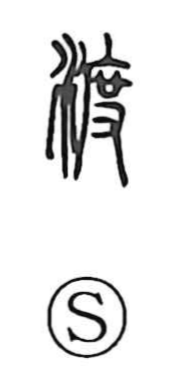

渡

Uncategorized
Kun: wataru, watasu, watashi | On: to
to cross ・ to ferry ・ to hand over ・ crossing
Explanation
渡 is a phono-semantic character: the water element on the left situates the action at water, while the right-hand 度 provides the sound (to) and the core image. 度 originally depicts hands spreading out a straw mat, which led to the idea of measuring by the mat’s length. From that motion of extending something from one end to the other arose the sense of carrying or going across. With water added, the character came to mean crossing water, and by extension it was used for everyday acts of crossing, ferrying, handing something across, and related notions of passage and delivery.